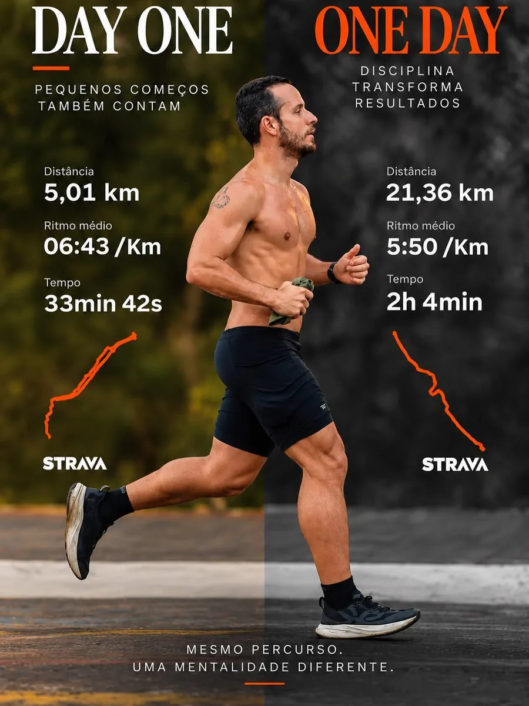

Leonardo
Fortes
Endocrinologista. Tratamento de diabetes, pré-diabetes, obesidade e tireoide, com foco em composição corporal, performance e em como você quer chegar aos 70.
Endocrinologista
Consulta + Bioimpedância
Status: agenda aberta
Aos 35, a diferença ainda parece pequena. Aos 70, ela pode significar independência.
3–4×/ano
Acompanhamento contínuo
BIA
Bioimpedância no consultório
O que eu trato
Do primeiro exame alterado ao acompanhamento de longo prazo.
Diabetes e pré-diabetes
Pré-diabetes não é ausência de doença: é o sinal de alerta para agir antes.
mg/dL · critério de referência
Agendar_avaliaçãoEmagrecimento com acompanhamento
Perder gordura sem perder músculo. A balança não conta a história inteira.
Massa magra
↑ preservada
Gráfico ilustrativo
Tireoide e hormônios
Hipotireoidismo, hipertireoidismo, nódulos e alterações hormonais, com investigação e acompanhamento.
Longevidade e performance
Musculação, metabolismo e check-up para quem treina e quer envelhecer forte.
Seu corpo em números
Gordura, massa magra e água corporal medidas no consultório, na hora da consulta.
Uma linha de base para acompanhar a evolução a cada retorno, além do peso.
BIA-0001
Exame
Bioimpedância
ilustrativo

5 km → 21 kmO endocrinologista que treina o que recomenda
Sou o Dr. Leonardo Fortes, endocrinologista em Teresina. Acredito que tratamento hormonal e metabólico funciona melhor quando conversa com a vida real: sono, alimentação, treino e rotina.
Corro, faço musculação e levo isso para o consultório: um plano que você consegue manter, com exames, bioimpedância e metas claras a cada retorno.
Especialidade
Endocrinologia
Cidade
Teresina · PI
Exame
Bioimpedância
Como funciona a consulta
Conversa
Histórico, rotina, sono, alimentação e treino. Sem pressa.
Bioimpedância
Composição corporal medida na hora: o ponto de partida real.
Exames
Leitura dos exames que você já tem e pedido do que faltar.
Plano + retorno
Metas claras e reavaliação nos retornos para ajustar o rumo.
Ciência sem enrolação
Toda semana, um Reel direto ao ponto sobre metabolismo, diabetes e treino.
Dúvidas frequentes
>> resposta
Comece pelo dia um
Abre o WhatsApp com a mensagem pronta